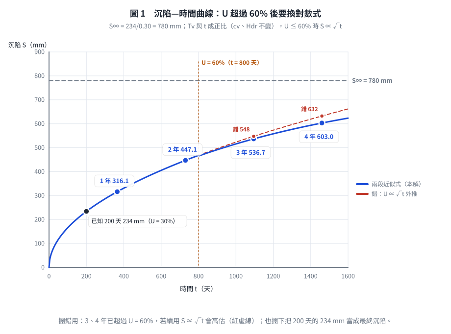

📄 題目正本：考卷原文・附圖・判讀清單（已確認）
SM-2018-1 題目正本
本檔只記錄考卷上寫了什麼、圖上畫了什麼，不含任何解法。解析見同資料夾
SM-2018-1.md。
判讀清單已確認（凍結）；本檔原則上不再修改（改動須回考卷原圖並記 log）。
| 項目 | 內容 |
|---|---|
| 考卷 | raw/exams/SM-2018_土壤力學與基礎設計.pdf 第 1 頁，第一題 |
| 考年 | 民國 107 年（2018） |
| 配分 | 25 分 |
| 附圖 | 無 |
| 判讀狀態 | 已確認（2026-11-15 關卡一：使用者授權依建議判讀確認；轉錄 2026-11-15；PyMuPDF 110 dpi 全頁目視；文字層核對；盲讀後才比對既有解析） |
1. 考卷原文（逐字）
一、某建物下方有一黏土層，建物載重施加 200 天後，造成 234 mm 壓密沉陷。依據實驗室壓密試驗結果顯示，此沉陷量對應 30% 的總壓密沉陷量。假設在壓密過程黏土層的壓密係數保持不變，試分別計算此建物載重施加 1 年、2 年、3 年及 4 年造成黏土層之壓密沉陷量。（25 分）
2. 考卷給的公式、附表與參數
- $t$ = 200 天時沉陷 234 mm，相當於總壓密沉陷量的 30%。
- 壓密係數 $c_v$ 在壓密過程保持不變（數值未給）。
- 沒有給：$U$–$T_v$ 關係式或表、黏土層厚度、排水條件、$c_v$ 數值、一年的天數。
- 卷首注意事項：㈠可以使用電子計算器。㈡不必抄題，作答時請將試題題號及答案依照順序寫在試卷上，於本試題上作答者，不予計分。㈢本科目除專門名詞或數理公式外，應使用本國文字作答。
3. 附圖
（本題無附圖。）
4. 判讀清單
| # | 項目 | 判讀 | 圖上／題文依據 | 把握 |
|---|---|---|---|---|
| 1 | 「30%」的意義 | 200 天時平均壓密度 $U$ = 30%，總（主要）壓密沉陷量 = 234／0.30 mm | 題文「此沉陷量對應 30% 的總壓密沉陷量」 | 確定（解讀） |
| 2 | $U$–$T_v$ 關係 | 考卷未給，須用 Terzaghi 一維壓密理論解（近似式或級數解） | 題文未附公式 | 確定（解讀） |
| 3 | 厚度與排水 | 未給；$c_v$、$H_{dr}$ 不變時 $T_v\propto t$，不需要個別數值 | 題文「壓密係數保持不變」 | 確定（解讀） |
| 4 | 一年的天數 | 考卷未定；以 365 天計 | — | 確定（解讀） |
| 5 | 所求 | $t$ = 1、2、3、4 年的壓密沉陷量（共四個值） | 題文 | 確定 |
| 6 | 考卷沒有給 | $U$–$T_v$ 公式、層厚、排水條件、$c_v$ | 全題 | 確定 |
轉錄：2026-11-15（SM-U1-3 題目正本推廣・批 2）
確認：2026-11-15 使用者授權依建議判讀確認（SM-U1-3 題目正本推廣・批 2，關卡一；使用者指示「要確認的依你建議」）
考題編號：SM-2018-1
主分類： SM-U1-3 土壤夯實及壓密
副分類： 無
分析法： 有效應力法
標籤： Terzaghi壓密理論 時間因數Tv 壓密度 壓密係數Cv 壓密沉陷
1. 題目（考卷原文見題目正本）
考卷原文、公式／附表、附圖與判讀清單（已確認）見
SM-2018-1-problem.md。本節只列解題時最容易讀錯的地方與本解使用的記號；題意以題目正本為準。
常見誤讀
| 項目 | 正確判讀 | 常見誤讀 |
|---|---|---|
| 30% 的意義 | 200 天時平均壓密度 $U$ = 30%，總沉陷 = 234／0.30 mm（題目正本 #1） | 把 234 mm 當成最終沉陷，或當成總沉陷的 70% |
| $U$–$T_v$ 關係 | 考卷未給，用 Terzaghi 解；$U$ > 60% 須改用對數式（#2） | 全程用 $T_v=\frac{\pi}{4}U^2$ |
| 厚度與排水 | 未給也不需要：$c_v$、$H_{dr}$ 不變時 $T_v\propto t$（#3） | 自行假設層厚與排水條件 |
本解記號： $S_t$ 時間 $t$ 的沉陷量；$S_c$ 總主要壓密沉陷量；$U$ 平均壓密度；$T_v$ 時間因數；一年以 365 天計（題目正本 #4）。
2. 考題核心精神與出題者意圖 (Core Concepts & Examiner's Intent)
本題測驗考生對 Terzaghi 一維壓密理論中「時間因數（$T_v$）與壓密度（$U$）關係」的熟悉度。
核心觀念為：
- 總壓密沉陷量不變，且各時間點的壓密度 $U = S_t / S_{max}$。
- 時間因數 $T_v = \frac{C_v \cdot t}{H_{dr}^2}$，在 $C_v$、$H_{dr}$ 保持不變的情況下，$T_v$ 與時間 $t$ 呈正比。
- 壓密度 $U$ 與 $T_v$ 的轉換公式有分界點（通常以 $U=60\%$ 為界），當 $U < 60\%$ 時 $T_v \propto U^2$，故 $U \propto \sqrt{t}$；當 $U > 60\%$ 時，兩者關係轉為對數關係。
3. 解題戰略地圖與陷阱分析 (Strategic Roadmap & Trap Analysis)
- 步驟 1：求出最終壓密沉陷量 $S_{max}$：由 $t=200$ 天的沉陷量與對應壓密度，可反推 $S_{max}$。
- 步驟 2：建立時間 $t$ 與時間因數 $T_v$ 的比例常數 $k$：利用 $U=30\% < 60\%$ 的公式 $T_v = \frac{\pi}{4} (U\%)^2$ 求出 $t=200$ 天時的 $T_v$，進而求得 $k = T_v/t$。
- 步驟 3：分年計算 $T_v$ 並判斷適用公式：
- 1 年（365天）、2 年（730天）：計算出的 $T_v$ 仍小於 $0.283$（對應 $U=60\%$），適用 $U \propto \sqrt{t}$ 快速求解，或是由 $T_v = \frac{\pi}{4} U^2$ 求 $U$。
- 3 年（1095天）、4 年（1460天）：計算出的 $T_v$ 已大於 $0.283$，須切換至 $U \ge 60\%$ 的對數近似公式 $T_v = 1.781 - 0.933 \log(100 - U\%)$ 反求 $U$。
- 陷阱 1：計算時間時，需明訂 1 年的天數（工程上一般取 365 天）。
- 陷阱 2：若直接將 $U \propto \sqrt{t}$ 盲目套用於所有年份，在 3 年、4 年時會因超過 60% 甚至超過 100% 而發生嚴重錯誤（例如 4 年算出 $U \approx 81\%$ 也是有誤差的，因為 $U \propto \sqrt{t}$ 已不適用）。
3.5 變數層次分析 (Variable Hierarchy Analysis)
最終目標
計算載重施加 1、2、3、4 年後的黏土層壓密沉陷量。
本題關鍵公式（依計算順序）
$$ S_{max} = \frac{S_{t1}}{U_1} $$
$$ T_{v1} = \frac{\pi}{4} U_1^2 \quad (U < 60\%) $$
$$ k = \frac{\boxed{T_{v1}}}{t_1} $$
$$ T_{vn} = \boxed{k} \cdot t_n $$
$$ U_n = \sqrt{\frac{4 \cdot \boxed{T_{vn}}}{\pi}} \quad (\text{當 } T_{vn} < 0.283 \text{ 時}) $$
$$ U_n = 100 - 10^{\frac{1.781 - \boxed{T_{vn}}}{0.933}} \quad (\text{當 } T_{vn} \ge 0.283 \text{ 時}) $$
$$ S_n = \boxed{S_{max}} \cdot \boxed{U_n} $$
L1：題目直接給定
| 符號 | 數值 | 說明 |
|---|---|---|
| $t_1$ | 200 天 | 初始已知條件對應的時間 |
| $S_{200}$ | 234 mm | 200 天時造成的壓密沉陷 |
| $U_{200}$ | 30% | 200 天時對應的總壓密沉陷量比例 |
L2：需知識點推導
1. 基礎參數與比例常數求取
| 符號 | 公式／來源 | 卡關? |
|---|---|---|
| $S_{max}$ | $S_{max} = \frac{S_{200}}{U_{200}}$ | |
| $T_{v(200)}$ | $T_v = \frac{\pi}{4} U^2$ (因 $U=30\% < 60\%$) | |
| $k$ | $k = \frac{T_v}{t} = \frac{C_v}{H_{dr}^2}$ | |
2. 各年份之時間因數與壓密度
| 符號 | 公式／來源 | 卡關? |
|---|---|---|
| $T_{v(365)}$ | $T_v = k \cdot 365$ | |
| $U_{365}$ | $U = \sqrt{4 T_v / \pi}$ (因 $T_v < 0.283$) | |
| $T_{v(730)}$ | $T_v = k \cdot 730$ | |
| $U_{730}$ | $U = \sqrt{4 T_v / \pi}$ (因 $T_v < 0.283$) | |
| $T_{v(1095)}$ | $T_v = k \cdot 1095$ | |
| $U_{1095}$ | $1.781 - 0.933 \log(100 - U) = T_v$ (因 $T_v > 0.283$) | |
| $T_{v(1460)}$ | $T_v = k \cdot 1460$ | |
| $U_{1460}$ | $1.781 - 0.933 \log(100 - U) = T_v$ (因 $T_v > 0.283$) | |
L3：深層知識（不懂就卡住）
| 知識點 | 說明 | 卡關? |
|---|---|---|
| 壓密度與時間因數之分段轉換公式 | 必須知道 $U=60\%$ 是拋物線公式與對數公式的轉折點，並能正確背出 $T_v = 1.781 - 0.933\log(100-U)$ |
4. 步驟化詳細計算過程 (Step-by-Step Detailed Calculation)
步驟 1：計算總壓密沉陷量
已知 $t = 200 \text{ 天}$ 時，沉陷量 $S_{200} = 234 \text{ mm}$，對應壓密度 $U_{200} = 30\% = 0.30$。
$$ S_{max} = \frac{S_{200}}{U_{200}} = \frac{234}{0.30} = 780 \text{ mm} $$
步驟 2：求時間比例常數 $k$
因 $U = 30\% < 60\%$，適用公式 $T_v = \frac{\pi}{4} U^2$ (此處 $U$ 帶入小數)
$$ T_{v(200)} = \frac{\pi}{4} (0.30)^2 = \frac{\pi}{4} \times 0.09 \approx 0.070686 $$
又 $T_v = \frac{C_v}{H_{dr}^2} t = k \cdot t$，且 $C_v$ 及 $H_{dr}$ 保持不變：
$$ k = \frac{T_{v(200)}}{200} = \frac{0.070686}{200} = 3.5343 \times 10^{-4} \text{ (天}^{-1}) $$
(註：為計算方便，假設 1 年 = 365 天)
步驟 3：計算 1 年（$t = 365$ 天）之沉陷量
$$ T_{v(365)} = k \cdot t = 3.5343 \times 10^{-4} \times 365 = 0.1290 $$
因 $T_{v(365)} < 0.283$（即 $U<60\%$），適用 $T_v = \frac{\pi}{4} U^2$：
$$ U_{365} = \sqrt{\frac{4 \cdot T_v}{\pi}} = \sqrt{\frac{4 \times 0.1290}{\pi}} = \sqrt{0.16425} = 0.4053 = 40.53\% $$
(或直接以 $U \propto \sqrt{t}$ 計算：$U_{365} = 30\% \times \sqrt{365/200} = 40.53\%$)
$$ S_{365} = S_{max} \cdot U_{365} = 780 \times 0.4053 = \boxed{316.1 \text{ mm}} $$
步驟 4：計算 2 年（$t = 730$ 天）之沉陷量
$$ T_{v(730)} = k \cdot t = 3.5343 \times 10^{-4} \times 730 = 0.2580 $$
因 $T_{v(730)} < 0.283$（即 $U<60\%$），適用 $T_v = \frac{\pi}{4} U^2$：
$$ U_{730} = \sqrt{\frac{4 \cdot T_v}{\pi}} = \sqrt{\frac{4 \times 0.2580}{\pi}} = \sqrt{0.3285} = 0.5732 = 57.32\% $$
(或直接以 $U \propto \sqrt{t}$ 計算：$U_{730} = 30\% \times \sqrt{730/200} = 57.32\%$)
$$ S_{730} = S_{max} \cdot U_{730} = 780 \times 0.5732 = \boxed{447.1 \text{ mm}} $$
步驟 5：計算 3 年（$t = 1095$ 天）之沉陷量
$$ T_{v(1095)} = k \cdot t = 3.5343 \times 10^{-4} \times 1095 = 0.3870 $$
因 $T_{v(1095)} > 0.283$，此時壓密度 $U > 60\%$，須改用對數近似公式：
$$ T_v = 1.781 - 0.933 \log_{10}(100 - U\%) $$
$$ 0.3870 = 1.781 - 0.933 \log_{10}(100 - U) $$
$$ \log_{10}(100 - U) = \frac{1.781 - 0.3870}{0.933} = \frac{1.3940}{0.933} = 1.4941 $$
$$ 100 - U = 10^{1.4941} = 31.20 $$
$$ U = 100 - 31.20 = 68.80\% $$
$$ S_{1095} = S_{max} \cdot U_{1095} = 780 \times 0.6880 = \boxed{536.7 \text{ mm}} $$
步驟 6：計算 4 年（$t = 1460$ 天）之沉陷量
$$ T_{v(1460)} = k \cdot t = 3.5343 \times 10^{-4} \times 1460 = 0.5160 $$
因 $T_{v(1460)} > 0.283$，同理使用對數公式：
$$ 0.5160 = 1.781 - 0.933 \log_{10}(100 - U) $$
$$ \log_{10}(100 - U) = \frac{1.781 - 0.5160}{0.933} = \frac{1.2650}{0.933} = 1.3558 $$
$$ 100 - U = 10^{1.3558} = 22.69 $$
$$ U = 100 - 22.69 = 77.31\% $$
$$ S_{1460} = S_{max} \cdot U_{1460} = 780 \times 0.7731 = \boxed{603.0 \text{ mm}} $$

圖 1 由 200 天 30% 推得的沉陷—時間曲線。攔下兩種錯：把 234 mm 當最終沉陷，以及 U 超過 60%（約 800 天）後仍用 $S\propto\sqrt{t}$ 外推。
5. 關鍵爭議點與進階探討 (Critical Issues & Advanced Discussion)
- 1 年的定義：工程上若未指明，一般以 365 天計算。有時若為了簡便，會將一年視為 12 個月，或不以日為單位而直接以「年」為單位（例如以 200/365 = 0.5479 年為基準）。本題直接以 365、730 天計算較為精準且無爭議。
- $U \ge 60\%$ 公式的選用：不同教科書對 $T_v$ 與 $U$ 轉換公式的小數點位數與對數形式略有差異，例如 Das 書中使用 $T_v = 1.781 - 0.933 \log_{10}(100 - U)$（$U$ 帶入百分比數值），或 $T_v = -0.085 - 0.933 \log_{10}(1 - U)$（$U$ 帶入小數）。兩者數學上是完全等價的。只要在 $U>60\%$ 時確實切換至對數公式，即可獲得多數閱卷委員的認可。若考生忘記對數公式，且考場上無 $T_v$ 與 $U$ 關係表可查時，容易在第 3、4 年的計算上失分，因此背誦此公式十分關鍵。
修正日期：2026-11-15（§1 改為指向題目正本 SM-2018-1-problem.md；§4 補解題圖解 figs/SM-2018-1-fig-1-settlement-time.svg（腳本 gen_SM-2018-1.py）；非勘誤）